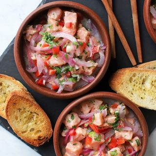

ceviche de salmón
Ingredientes
- 500 grs de salmón fresco
- 3/4 taza de jugo de limón
- 1 cebolla roja
- 2 dientes de ajos
- 1 ají verde
- 1 taza de jamón de pavo u otro cortado en trozos pequeños
- 1/2 unidad pimentón rojo
- 2 a 3 cucharadas de cilantro
- sal a gusto
Preparacion
- Limpiar el salmón, retirar la piel si es que lo compra así..
- Retirar la zona café oscuro que trae por uno de sus lados.
- Cortar el salmón en cuadritos pequeños y colocar en un bowl.
- Agregar el jugo de limón, la cebolla picada en cuadros pequeños o en juliana (en pluma), ajo picado fino, ají en pequeños cuadros y cilantro picado.
- Mezclar todo muy bien y sazonar con sal. Dejar marinar unos 20 minutos.
- Ideal servir en pocillos de greda con el acompañamiento deseado como trozos de pan tostado.
- También puede servirlo sobre hojas de lechuga.